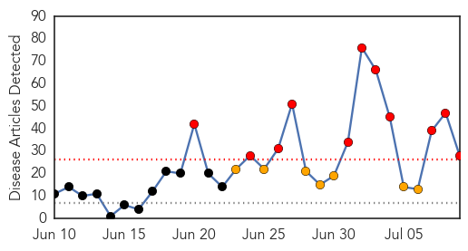
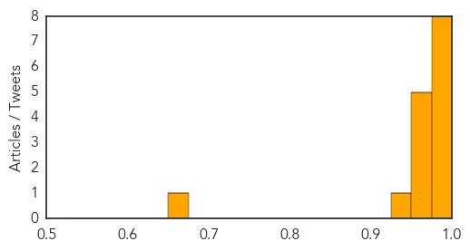

Ebola
30-Day Web Trend
11 alerts, 7 warnings

30-Day Twitter Trend
1 alerts, 1 warnings

Article Locations

Article Confidences

Top Articles:
- 1.000
- West Africa Ebola Kills 25 More
- 1.000
- Could Ebola Spread To The UK?
- 1.000
- Mobile phone plan to stop Ebola
- 1.000
- Médecins Sans Frontières (MSF) International
- 1.000
- Ebola outbreak now most deadly ever in West Africa
- 1.000
- 50 new Ebola cases, 25 deaths in W.Africa
- 0.999
- Ebola scare: Health Ministry moves to contain possible spread
- 0.999
- Ebola virus disease West Africaupdate
- 0.999
- Fifty new Ebola cases, 25 deaths in West Africa
- 0.998
- MoH moves fast to contain spread of Ebola scare
- 0.997
- Stronger Response Needed to Ebola Crisis
- 0.997
- Call for better resources to deal with Ebola virus outbreak in Sierra Leone
- 0.997
- An Ebola Survivor Returns Home
- 0.994
- Fifty new Ebola cases, 25 deaths in West Africa
- 0.993
- Fifty new Ebola cases and 25 deaths in West Africa - WHO
- 0.992
- Could Smallpox Come Back?
- 0.992
- Vectors or victims? Docs slam rumors that migrants carry disease
- 0.990
- Suspected Ebola case proves negative
- 0.989
- American suspected of Ebola infection dies in Ghana
- 0.988
- WHO To Set Up Ebola Control Center In Guinea
- 0.977
- Ghana isn't prepared for Ebola outbreak
- 0.915
- Doctors look to technology — including Jeopardy-winning supercomputer — to battle Ebola outbreak
- 0.910
- Public Affairs lead 10 political parties to fight Ebola « Awoko Newspaper
- 0.898
- Security authorities screen arrivals at ports for Ebola
- 0.896
- UN Security Council voices concern at health, terrorist threats in West Africa
- 0.893
- Registered nurse from Ontario leaving Thursday to join fight against deadly Ebola outbreak in West... -- CALGARY, July 9, 2014
- 0.725
- Ghana to host ECOWAS summit, ebola high on agenda
- 0.517
- Gambian papers focus on Ebola, others
Top Tweets:
-
No tweets found for Jul 09, 2014
Chikungunya
30-Day Web Trend
5 alerts, 2 warnings
30-Day Twitter Trend
1 alerts, 0 warnings

Article Locations
Article Confidences
Top Articles:
- 0.998
- Caribbean mosquito-borne virus making its way to U.S.
- 0.998
- Kansas State University scientist leading research on Chikungunya virus
- 0.998
- K-State researcher: Prevention key to avoiding chikungunya outbreak
- 0.996
- First state case of mosquito-borne virus confirmed
- 0.992
- The Nassau Guardian
- 0.991
- Chikungunya mosquito virus affects two people in New Hampshire
- 0.990
- Bahamas confirms first chikungunya case
- 0.987
- Minister Dorsett press statement
- 0.974
- US imported chikungunya cases climb to 138
- 0.970
- Mosquito-borne illness hits well-known local woman in Haiti
- 0.967
- Chikungunya: It's not if, but when it'll become prevalent in the - KTRE.com
- 0.963
- First Chikungunya Case Found in Texas - KWES NewsWest 9 / Midland, Odessa, Big Spring, TX: newswest9.com
- 0.953
- The Nassau Guardian
- 0.939
- Taiwan helps Haiti combat ...｜Society｜WCT
- 0.654
- Man survives chikungunya, says he "felt old"
Top Tweets:
-
No tweets found for Jul 09, 2014